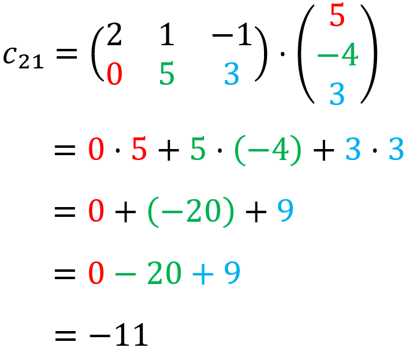

PERKALIAN MATRIKS
Hore! Kita udah ketemu hasil dari c11. Sekarang, misi kita adalah mencari c21. Cara mencari c21 adalah dengan mengalikan baris kedua matriks A dan kolom pertama matriks B. Yuk kita lihat cara mengerjakannya.
GACOR EUY! Teman-teman berhasil menemukan jawaban dari c21. Nice, sekarang kita udah dapet nih hasil dari perkalian matriks A dengan matriks B, yaitu ini!

Materinya sudah selesai~ Terima kasih sudah mau belajar di Mootrix (‾◡◝) sampai jumpa! 👋🏻